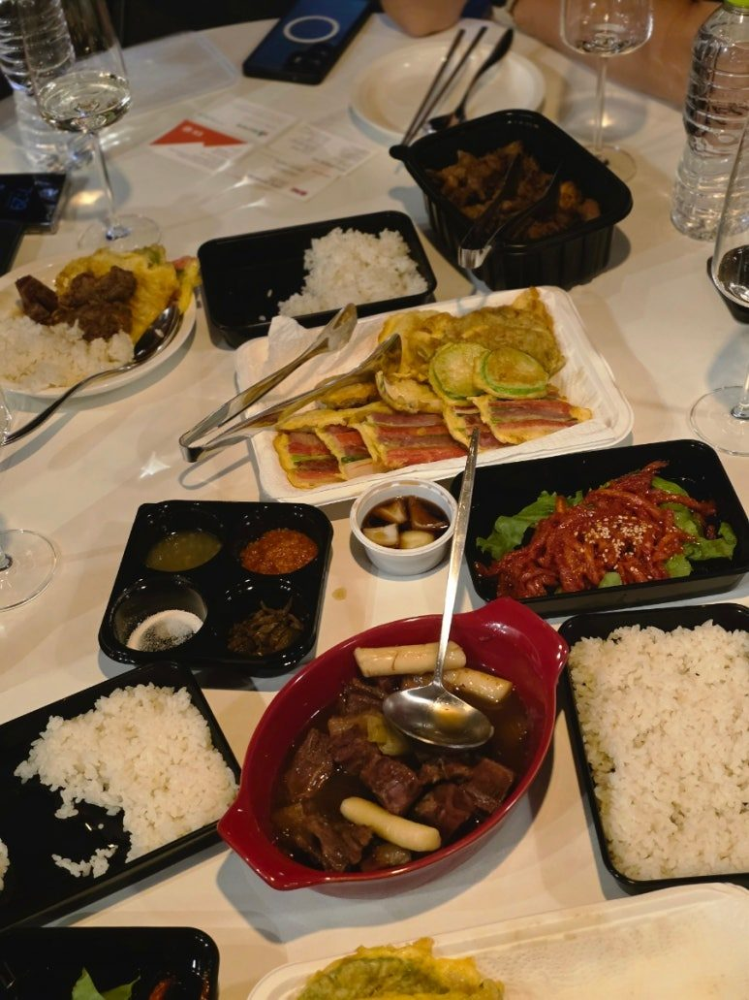
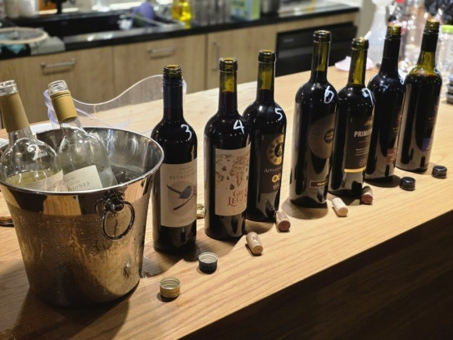
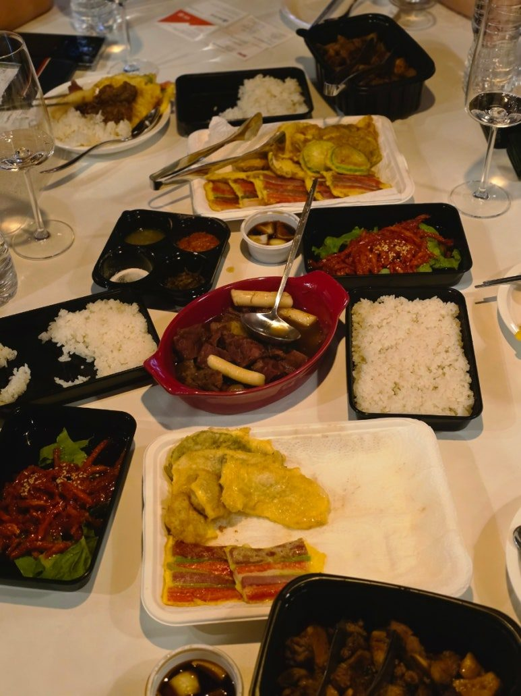
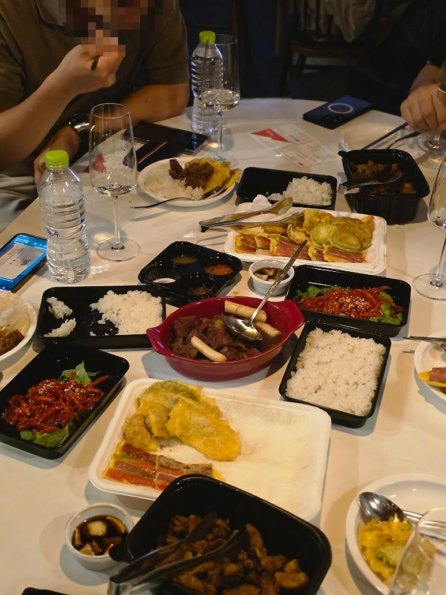
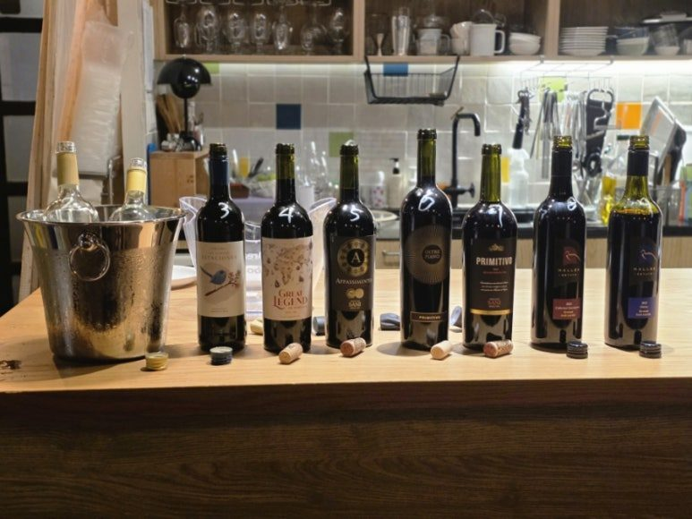
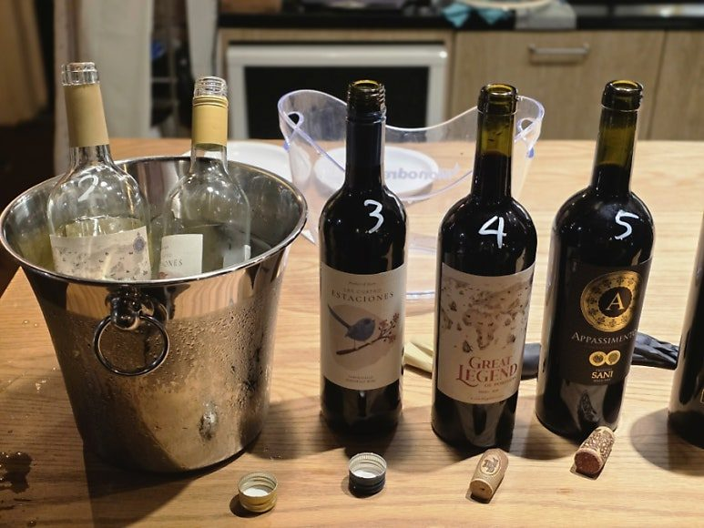
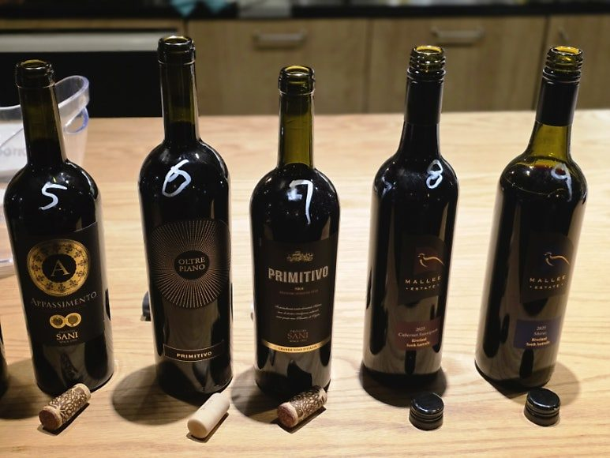
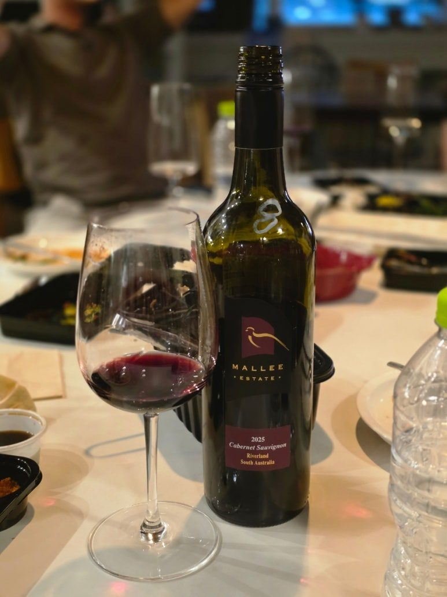
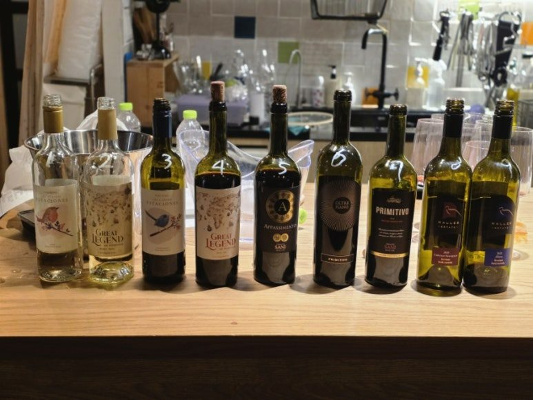

추석 와인 선물세트 추천
한식과 잘 어울리는 2~3만원대 와인 9종 시음회 후기
추석이 다가오면서 추석 와인 선물세트를 준비하시는 분들이 부쩍 많아졌습니다.
추석이 다가오면서 추석 와인 선물세트를 준비하시는 분들이 부쩍 많아졌습니다.
특히 기업 선물이나 거래처 선물처럼 여러 병을 준비해야 하는 경우에는 가격도 중요하지만, 받는 분들이 실제로 맛있게 마실 수 있는 와인인지가 더 중요하죠.
그래서 이번에는 땡큐와인에서 조금 특별한 시음회를 준비했습니다.

바로 추석 와인 선물세트에 들어갈 2~3만원대 가성비 와인을 직접 비교해보는 시음회였어요.
총 9종의 와인을 준비하고, 단순히 와인만 맛보는 것이 아니라 추석에 실제로 즐길 만한 음식과 함께 페어링해봤습니다.


추석 와인 선물세트, 한식과 잘 어울리는지가 중요하니까
이번 시음회에서 가장 신경 쓴 부분은 음식과의 궁합이었습니다.
추석 선물용 와인이라면 결국 명절 식탁에서 마시게 될 가능성이 높잖아요.
그래서 이번에는
모듬전
김치찜
양념갈비
같은 음식을 준비했습니다.
와인만 따로 마실 때와 음식과 함께 마실 때의 느낌이 꽤 달라질 수 있기 때문에, 실제 명절 식탁을 생각하면서 하나씩 비교해봤어요.
그리고 역시나 이번에도 느낀 건,
한식과 와인은 생각보다 정말 잘 어울린다는 것.
전의 기름진 맛이나 양념갈비의 달고 짭조름한 풍미, 김치찜의 진한 감칠맛까지 각각의 음식에 맞춰 와인을 골라보는 재미가 있었습니다.
특히 이번처럼 추석 음식과 함께 마실 와인을 고르는 경우에는 지나치게 무겁거나 단 와인보다는 음식의 맛을 방해하지 않고 편하게 넘어가는 와인이 훨씬 손이 많이 가더라고요.


9종을 모두 마셔보고 나니 보였던 의외의 결과
이번 시음회가 재미있었던 이유가 하나 더 있습니다.
보통 시음회를 하면 참석자들에게 어떤 와인이 가장 맛있었는지 물어보게 되는데요.
이번에는 굳이 물어보지 않아도 답이 보였습니다. 😂
모든 와인을 다 시음하고 나서 테이블을 둘러보니,
어떤 와인은 병이 거의 텅 비어 있고, 어떤 와인은 아직 꽤 많이 남아 있더라고요.
그걸 보니 자연스럽게 참석자들의 선호도가 보였습니다.
이번 시음회에서 특히 반응이 좋았던 와인은
1번 화이트 와인과 8번, 9번 레드 와인!
세 병은 확실히 다른 와인보다 빠르게 잔이 비워졌습니다.
아무래도 이번 시음회가 음식과 함께 진행됐기 때문인지, 전반적으로 달지 않고 깔끔하면서 목넘김이 좋은 와인에 대한 선호도가 높다는 생각이 들었어요.

1번｜이스타시오네 아이렌 세미 스위트
처음에는 이름 때문에 조금 의외였습니다.
이스타시오네 아이렌 세미 스위트.
'세미 스위트'라고 되어 있으니 아무래도 꽤 달지 않을까 생각했는데, 실제로 마셔보니 생각보다 훨씬 깔끔했습니다.
오히려 음식과 함께 마셨을 때는 드라이한 느낌에 가깝게 느껴지는 편이었어요.
그래서 모듬전부터 여러 음식과 함께 곁들여보기 좋았습니다.
특정 음식 하나에만 맞는 와인이라기보다는 다양한 음식 사이사이에 편하게 마실 수 있는 스타일이라는 점이 장점으로 느껴졌습니다.
이번 시음회에서도 화이트 와인 중 특히 반응이 좋았던 이유가 이런 부분이 아닐까 싶어요.
"세미 스위트인데 생각보다 안 달다."
이 부분이 꽤 인상적이었습니다.
추석 선물용 와인을 고르면서 레드 와인만 생각하셨다면, 이런 스타일의 화이트 와인도 함께 후보에 넣어볼 만하겠다는 생각이 들었습니다.


8번｜말리 에스테이트 까베르네 소비뇽
그리고 이번 시음회에서 레드 와인 중 반응이 정말 좋았던 와인.
바로 말리 에스테이트 까베르네 소비뇽입니다.
호주 하면 많은 분들이 가장 먼저 쉬라즈를 떠올리시죠.
그런데 이번 시음회를 하면서 재미있었던 건, 호주 와인 중에서도 참석자들의 입맛에는 까베르네 소비뇽이 상당히 편하게 다가온다는 것이었습니다.
특히 식사와 함께 마셨을 때 부담이 적고, 데일리 와인으로 편하게 즐기기 좋은 느낌이었습니다.
양념갈비처럼 풍미가 진한 음식과도 잘 어울리고, 그냥 가볍게 한 잔씩 즐기기에도 부담이 적은 스타일이라 추석 선물용 레드 와인으로도 꽤 괜찮겠다는 생각이 들었습니다.
무엇보다 시음이 끝난 뒤 참석하신 멤버분들이 계속 물어보셨어요.
"이 와인 언제 들어와요?"
이 정도면 반응은 굳이 설명하지 않아도 되겠죠. 😊


9번｜말리 에스테이트 쉬라즈
그리고 호주 와인의 대표 품종이라고 할 수 있는 쉬라즈도 함께 비교해봤습니다.
말리 에스테이트 쉬라즈 역시 반응이 상당히 좋았습니다.
호주 쉬라즈 특유의 매력을 좋아하시는 분들에게는 역시 익숙하고 편하게 다가오는 스타일이었고, 이번에는 특히 음식과 함께 즐기면서 좋은 평가를 받았습니다.
다만 이번 시음회에서 느낀 개인적인 재미는 같은 호주 레드 와인이라도 참석자들의 선호도가 까베르네 소비뇽 쪽으로 조금 더 기울었다는 점입니다.
물론 개인적인 취향 차이는 있겠지만, 한국에서 데일리 와인이나 선물용 와인을 고른다면 까베르네 소비뇽이 조금 더 대중적으로 편하게 다가갈 수 있겠다는 생각이 들었습니다.


결국 추석 선물용 와인은 '편하게 마실 수 있는 와인'이 강하다
이번 9종 시음회를 통해 꽤 재미있는 결과를 확인할 수 있었습니다.
고가의 와인이 무조건 좋은 것도 아니고, 품종이 유명하다고 해서 모두가 좋아하는 것도 아니었습니다.
오히려 실제 음식과 함께 마셔보니
✔ 너무 달지 않고
✔ 목넘김이 편하고
✔ 음식과 잘 어울리고
✔ 한두 잔 더 마시고 싶어지는 와인
에 자연스럽게 손이 많이 갔습니다.
특히 추석처럼 여러 사람이 함께 식사하는 자리에서는 이런 특성이 더욱 중요할 것 같아요.
취향이 모두 다른 가족이나 거래처에 선물한다면 너무 개성이 강한 와인보다는 누구나 편하게 즐길 수 있는 가성비 와인이 오히려 좋은 선택이 될 수 있으니까요.
추석 와인 선물세트, 곧 구성해서 안내드릴게요
이번 시음회에서 반응이 좋았던 와인들을 중심으로 땡큐와인 추석 와인 선물세트를 곧 구성해서 안내드릴 예정입니다.
특히 이번에 시음회에서 인기가 많았던 말리 에스테이트 까베르네 소비뇽과 쉬라즈는 참석자분들의 문의가 계속 들어올 정도로 반응이 좋았어요.
그리고 무엇보다 이번 추석 와인 선물세트는 3만원 이하의 부담 없는 가격대로 구성할 예정입니다.
기업이나 거래처 선물처럼 여러 병이 필요한 경우에도 부담을 낮출 수 있도록 준비하고 있어요.
아직 정확한 구성과 가격은 최종 조율 중이지만, 미리 예약해주시는 분들에게는 더 좋은 혜택을 드릴 예정입니다.
추석 선물용 와인을 찾고 계셨다면 조금만 기다려주세요. 🍷
"무슨 와인을 골라야 할지 모르겠다"는 분들을 위해 실제로 시음해보고, 음식과 함께 먹어보고, 반응까지 확인한 와인들로 선물세트를 구성해보겠습니다.
좋은 와인을 고르는 가장 좋은 방법은 결국 직접 마셔보고, 함께 먹어보고, 사람들이 어떤 와인에 손이 가는지 보는 것이니까요.
이번 시음회에서 확인한 결과를 바탕으로
받는 분도 부담 없이 즐겁게 마실 수 있는 추석 와인 선물세트를 준비해보겠습니다. 🍷
추석 와인 선물세트 / 2~3만원대 와인 / 가성비 와인 / 한식과 잘 어울리는 와인 / 거래처 선물용 와인을 찾고 계셨다면 곧 공개될 땡큐와인 선물세트도 기대해주세요!
이 글은 땡큐와인 네이버 블로그에 먼저 올린 글이에요.